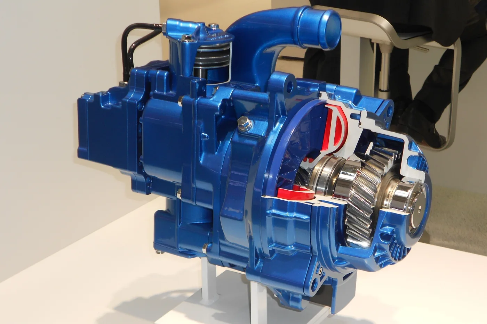

Cuando un camión cargado inicia una bajada larga, la gravedad sigue empujándolo aunque el conductor deje de acelerar. Si toda la tarea de controlar la velocidad recae durante mucho tiempo sobre los frenos de las ruedas, estos acumulan calor y pueden perder eficacia. Para eso existe el retarder, también llamado ralentizador: un sistema de frenado auxiliar continuo que ayuda a sostener una velocidad controlada y deja más reserva en los frenos de servicio.
No es un freno de estacionamiento, ni un reemplazo de los frenos de las ruedas, ni un dispositivo que haga segura por sí sola cualquier bajada. Su utilidad depende de la carga, la pendiente, la adherencia, la velocidad, la capacidad de refrigeración y el modelo de camión. En Argentina puede verse especialmente valioso en recorridos de montaña o de carga pesada, pero las instrucciones concretas siempre deben salir del manual de la unidad y de la capacitación del conductor.
Qué problema resuelve en una bajada
Un freno de disco o tambor desacelera mediante fricción en las ruedas. Es imprescindible para detener el vehículo y para muchas maniobras, pero una aplicación prolongada genera temperatura en discos, tambores y material de fricción. Si ese conjunto se calienta demasiado, puede aparecer fading: una caída de la capacidad de frenado. Voith y ZF describen el retarder como una forma de descargar trabajo de esos frenos durante períodos largos.
El objetivo práctico es contener la velocidad antes de que aumente demasiado, no intentar recuperar el control recién cuando el camión ya se aceleró. Algunos sistemas pueden trabajar con un mando de varios niveles; otros se integran con el pedal, el control de velocidad en pendiente y el freno motor. La documentación argentina de Scania describe tanto el accionamiento manual como los modos automáticos. Eso no significa que todos los camiones usen la misma palanca o lógica de control.
Cómo funciona un retarder hidráulico
En un retarder hidrodinámico hay dos elementos con álabes enfrentados. Uno, el rotor, gira conectado al tren de transmisión; el otro, el estátor, permanece fijo. Al activar el sistema, un fluido circula entre ambos. El rotor acelera ese fluido y el estátor lo obliga a cambiar de dirección: la resistencia resultante se opone al giro de la transmisión y desacelera el camión. Voith explica este principio para sus equipos.
La energía del movimiento no desaparece. Se convierte en calor, que debe evacuar el circuito de refrigeración. Por eso “sin desgaste de pastillas” no significa “sin temperatura” ni “sin mantenimiento”. El esfuerzo continuo tiene un límite térmico; si el sistema advierte una restricción o una falla, corresponde seguir el procedimiento del fabricante y no asumir que seguirá frenando igual.
Algunas variantes trabajan con aceite en un circuito propio; otras, como el Aquatarder de la foto, utilizan un diseño basado en el refrigerante del vehículo. La ubicación también varía. El Intarder de ZF se integra en la transmisión, mientras otras soluciones se instalan en una posición diferente de la cadena cinemática. Por eso el nombre “retarder” identifica una función, no una pieza universal intercambiable.

Retarder, freno motor y frenos de servicio: tres tareas distintas
Freno de servicio: actúa en las ruedas y es el sistema principal para reducir velocidad y detener el vehículo. Debe permanecer plenamente operativo aunque haya retarder. También interviene cuando hace falta una desaceleración que el sistema auxiliar no puede ofrecer por sí solo.
Freno motor: aprovecha el motor para oponerse al avance. Según el vehículo, puede incluir freno de escape o de liberación por compresión. Su rendimiento depende de la arquitectura y de las revoluciones de trabajo. Scania Argentina explica que su freno por compresión CRB puede complementar o incluso sustituir al retarder en ciertas aplicaciones; no todos los camiones necesitan la misma combinación.
Retarder: genera resistencia adicional en la transmisión o en otro punto del tren motriz. En equipos como el Intarder, ZF señala que la acción no depende de las revoluciones del motor. La potencia de frenado sí depende del diseño del equipo, de su velocidad de giro y de las condiciones térmicas. No se debe generalizar una prestación anunciada por una marca a todos los modelos.
En la práctica, la electrónica puede coordinar estos sistemas. El conductor puede no notar con exactitud qué porcentaje de la desaceleración aporta cada uno en un modo automático, pero sí necesita reconocer los mandos, las advertencias y los límites de su unidad. La pregunta correcta no es “¿cuál freno reemplaza al otro?”, sino “¿cómo trabajan juntos sin agotar la capacidad de ninguno?”.
Por qué no reemplaza al freno del pedal
El retarder está pensado sobre todo para gestionar energía durante la marcha. Su eficacia puede disminuir a velocidades bajas, según el tipo de instalación y el modelo. Para detener por completo y mantener inmóvil el camión se necesitan los sistemas de frenado previstos para esas funciones. Tampoco corrige una velocidad de entrada inadecuada a una pendiente ni compensa frenos de servicio en mal estado.
En un conjunto con semirremolque, el equilibrio entre tractor y remolque también importa. El retarder actúa sobre el tren de transmisión del vehículo que lo incorpora; no convierte por sí mismo a los frenos del remolque en innecesarios. Conviene verificar siempre que todos los sistemas de frenado del conjunto estén operativos antes de un recorrido exigente.
Qué cambia con lluvia, hielo o baja adherencia
Más capacidad de frenado no equivale a más adherencia. En una calzada resbaladiza, una desaceleración intensa sobre el eje motriz puede comprometer el agarre. Scania advierte que depender demasiado del retarder en hielo puede llevar al bloqueo de ruedas. Los sistemas electrónicos modernos pueden modular su intervención, pero no eliminan la necesidad de adaptar la conducción a la superficie.
Esta nota no fija una velocidad, marcha ni nivel de palanca para una bajada: esos parámetros dependen de la configuración, el peso, el estado del camino y las instrucciones de cada fabricante. Ante una advertencia de temperatura, un comportamiento anormal o falta de desaceleración, lo responsable es aplicar el procedimiento indicado para esa unidad y buscar asistencia técnica cuando corresponda.
Ventajas operativas y sus límites
La ventaja más visible es la reducción del trabajo repetido de los frenos de las ruedas. Eso puede alargar la vida de pastillas, cintas, discos o tambores y dejar más capacidad disponible para una frenada necesaria. ZF afirma que su Intarder puede asumir hasta el 90 % de las maniobras de frenado en ciertas aplicaciones; se trata de una cifra comercial de ese producto, no de una promesa universal para cualquier ruta, carga o retarder.
El otro beneficio es la regularidad: en un descenso prolongado, el conductor puede sostener un ritmo más uniforme dentro de los límites seguros de la unidad. Pero el equipo añade costo, peso y necesidades de servicio. Para una flota que casi nunca enfrenta pendientes o frenado intensivo, quizá el freno motor disponible cubra la operación; para trabajo pesado en terreno montañoso, el análisis puede ser distinto. La decisión debe basarse en la ruta y el vehículo reales.
Qué revisar cuando deja de rendir como antes
Un cambio de comportamiento merece diagnóstico, no una suposición rápida. El taller debe identificar primero el modelo exacto del retarder y consultar el procedimiento correspondiente. Entre los puntos que pueden intervenir están el estado y la temperatura del circuito de refrigeración, fugas, nivel o calidad del fluido cuando aplique, sensores, conectores, mandos y códigos de falla. También hay que distinguir una reducción de potencia por protección térmica de una avería permanente.
El retarder no se evalúa aislado: neumáticos, frenos de servicio, transmisión y refrigeración forman parte de la seguridad del conjunto. Una intervención sobre el sistema hidráulico o eléctrico requiere herramientas, fluidos y parámetros especificados por el fabricante. No conviene adaptar piezas solo porque parezcan similares ni borrar advertencias sin haber encontrado la causa.
En pocas palabras
El retarder sirve para ayudar a controlar la velocidad de un camión pesado durante frenadas prolongadas, especialmente en descensos, con menos desgaste de los frenos de servicio. En los modelos hidrodinámicos, esa desaceleración nace de la resistencia de un fluido y su energía termina como calor que debe refrigerarse. Su mejor aporte aparece cuando se integra a un sistema de frenado sano y a una conducción adecuada para la carga y el camino.
Para quien compra repuestos o planifica mantenimiento en Argentina, el dato clave es identificar la unidad: marca, modelo, transmisión y tipo de retarder. Con esa información se puede buscar la pieza correcta y consultar el procedimiento de servicio. La palabra “retarder” describe una función muy útil, pero no reemplaza la ficha técnica de cada camión.